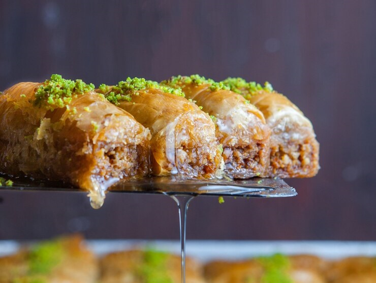
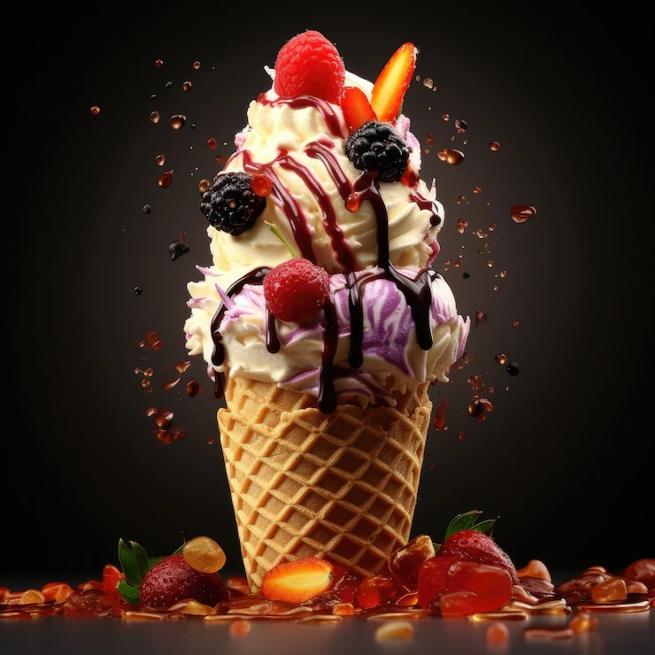

|
Gulab Jamun
- Description: Milk-solid dumplings in rose-flavored sugar syrup.
- Quantity: 2 pieces
- Price: ₹60
- Texture: Soft and syrup-soaked.
- Served: Hot or cold
- Perfect after: Spicy meal.
|
|  |
Baklava
- Description: A luxurious Middle Eastern dessert made of layers of thin filo pastry
- Quantity: 2 pieces (approx. 100g)
- Price: ₹120
- Taste: Buttery, nutty, and delicately sweet with a crispy, flaky texture.
- Nuts Used: Pistachios, walnuts, or almonds (based on variant).
- Perfect for: A premium end to your biryani feast or a sweet gift treat.
|
 |
Double Ka Meetha
- Description: Fried bread pudding in milk and saffron.
- Quantity: 1 cup (150ml)
- Price: ₹80
- Highlights: Rich, creamy, festive flavor.
- Texture: Soft, ghee-soaked.
- Traditional Hyderabadi delight.
|
 |
Rasmalai
- Description: Cheese dumplings soaked in flavored milk.
- Quantity: 2 pieces
- Price: ₹100
- Taste: Light, milky, cardamom infused.
- Texture: Spongy & creamy.
- Best served chilled.
|
|  |
Ice Cream
- Description: A creamy and refreshing dessert available in multiple classic and exotic flavors to satisfy every sweet craving.
- Quantity: 1 scoop (100ml)
- Price: ₹60 per scoop (₹110 for 2 scoops)
- Flavors Available: Vanilla, Chocolate, Strawberry, Butterscotch, Mango, Pista, and more.
- Toppings (optional): Choco chips, nuts, caramel drizzle – ₹10 each.
- Best for: Beating the heat or ending your biryani meal on a cool note.
|